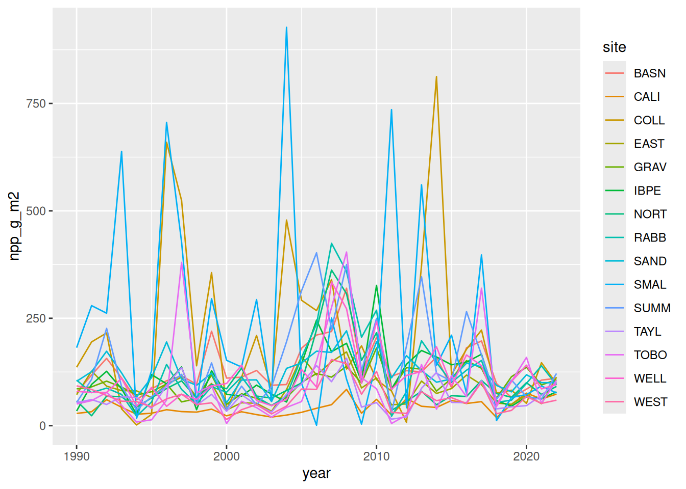
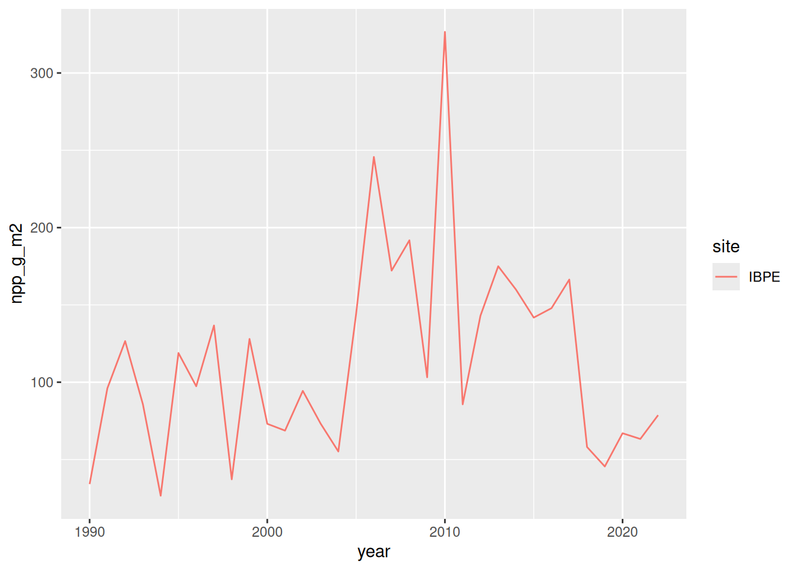

# Access Jornada data from the EDI repository
library('tidyverse')── Attaching core tidyverse packages ──────────────────────── tidyverse 2.0.0 ──
✔ dplyr 1.2.1 ✔ readr 2.2.0
✔ forcats 1.0.1 ✔ stringr 1.6.0
✔ ggplot2 4.0.3 ✔ tibble 3.3.1
✔ lubridate 1.9.5 ✔ tidyr 1.3.2
✔ purrr 1.2.2
── Conflicts ────────────────────────────────────────── tidyverse_conflicts() ──
✖ dplyr::filter() masks stats::filter()
✖ dplyr::lag() masks stats::lag()
ℹ Use the conflicted package (<http://conflicted.r-lib.org/>) to force all conflicts to become errorslibrary('EDIutils')
# Data access at EDI requires authentication. The easiest way is to create
# an API key at https://auth.edirepository.org. Once you have that, place
# it in your script. Below, we're getting it from an environmental variable,
# but you can replace the "Sys.getenv" part with your actual key.
mykey <- Sys.getenv("EDI_API_KEY")
# Log in to EDI rogrammatically with an API key
EDIutils::login(key = mykey)Logged in with EDI-API key.# Set the dataset ID
datasetID <- "knb-lter-jrn.210011003.106"
# Read the list of "entities" in the dataset
ents <- read_data_entity_names(datasetID)
# Read the raw entity data
raw <- read_data_entity(datasetID, ents[1, "entityId"])
# Now read the raw data as a CSV
df <- readr::read_csv(file = raw)Rows: 495 Columns: 4
── Column specification ────────────────────────────────────────────────────────
Delimiter: ","
chr (2): zone, site
dbl (2): year, npp_g_m2
ℹ Use `spec()` to retrieve the full column specification for this data.
ℹ Specify the column types or set `show_col_types = FALSE` to quiet this message.# Explore the data a little
head(df)# A tibble: 6 × 4
year zone site npp_g_m2
<dbl> <chr> <chr> <dbl>
1 1990 C CALI 28.6
2 1990 C GRAV 85.7
3 1990 C SAND 103.
4 1990 G BASN 77.2
5 1990 G IBPE 34.1
6 1990 G SUMM 53.7unique(df$site) [1] "CALI" "GRAV" "SAND" "BASN" "IBPE" "SUMM" "NORT" "RABB" "WELL" "COLL"
[11] "SMAL" "TOBO" "EAST" "TAYL" "WEST"length(unique(df$site))[1] 15# Now make a simple plot
g <- ggplot(data=df, aes(x=year, y=npp_g_m2, col=site)) +
geom_line()
# Show it
g
# Now lets subset and plot site==IBPE
df_ibpe <- df |> filter(site=="IBPE")
g2 <- ggplot(data=df_ibpe, aes(x=year, y=npp_g_m2, col=site)) +
geom_line()
g2